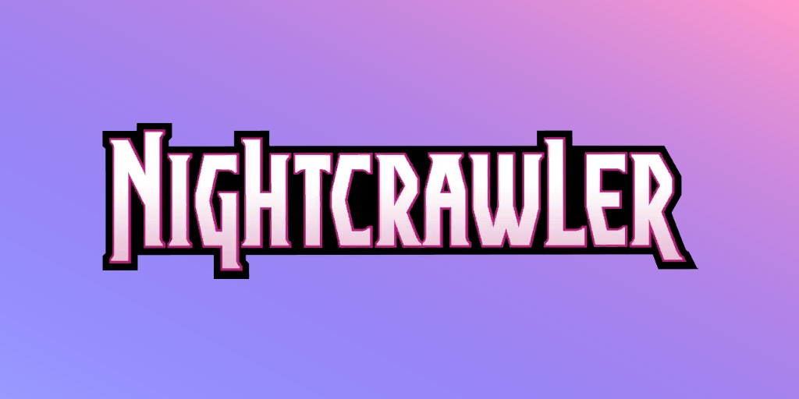
Diablo (Kurt Wagner) (Terre-616)
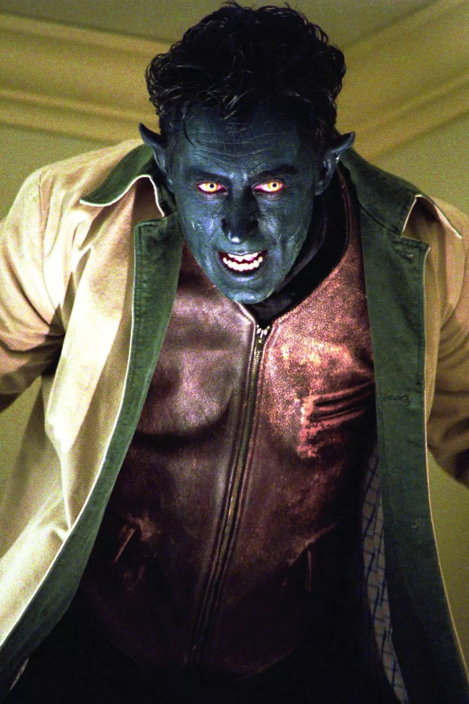
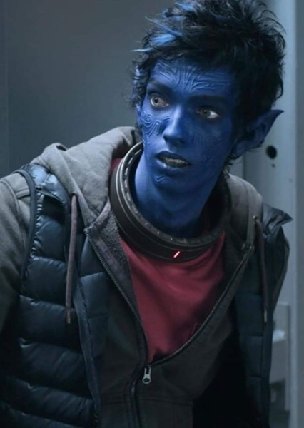
Origines :
Sous l'apparence d'une noble allemande, la mutante Raven Darkhölme épousa le Baron Christian Wagner pour accroître sa fortune ainsi que celle de sa compagne Irene Adler.
Durant leur mariage, Mystique demanda au baron d'engager Irene en tant que servante.
Sur demande d'Irene, elle commença une liaison avec un mutant métamorphe de La Isla des Demonas, Azazel, qui se faisait passer pour un homme, mais elle s'en lassa rapidement.
Une nuit, Irene confia qu'elle souhaitait avoir un enfant avec Raven, qui accepta et se changea en homme, altérant sa forme et son genre pour passer les traits d'Azazel à l'enfant.
Pour ne pas éveiller les soupçons et plaire à son époux qui voulait aussi un enfant, Mystique fit semblant d'être enceinte au même rythme qu'Irene, qui portait le véritable enfant.
Toutefois, le baron Wagner eut des doutes après avoir vu Raven en compagnie d'Azazel et il commença à l'espionner.
Une nuit, il surprit Raven et Irene et voulut les tuer, mais Mystique l'assassina la première.
Elle se fit alors passer pour le baron pour cacher la vérité.
Irene accoucha d'un bébé ressemblant à un démon.
Mystique et elle voulurent l'élever, mais elles furent découvertes par le personnel du Baron qui découvrirent la véritable apparence de Raven.
Les deux femmes furent poursuivies par une foule en colère, et Irene récupéra le bébé que Mystique avait abandonné près d'un arbre.
Avant l'arrivée d'Azazel, Destinée avait vu le futur où ce dernier serait un puissant conquérant maléfique, et pour le stopper, l'enfant devait être présenté comme son fils, espérant que cela suffirait à déjouer ses projets.
Les deux femmes allèrent trouver Charles Xavier pour qu'il altère leurs souvenirs, et Mystique se remit rapidement de la perte de son enfant.
Les souvenirs que le couple garderait serait que Raven avait eu une liaison avec Azazel qui l'avait mise enceinte, et qu'elle tua le baron avant d'abandonner l'enfant près d'une rivière.
En réalité, Destinée confia l'enfant prénommé Kurt Wagner à Margali Szardos, une sorcière et une reine gitane.
Quand elle devint diseuse de bonne aventure au Herr Getmann's Traveling Menagerie, Margali prit le bébé avec elle et l'éleva.
L'apparence de Kurt lui fit devenir un monstre de foire pour le compte de Herr Max Getmann.
Margali devint alors la mère adoptive de l'enfant, qu'elle éleva auprès des siens : Stephan et Jimaine Szardos.
Stephan et Kurt devinrent rapidement de vrais amis, ce dernier craignant que son héritage ne le rende fou un jour.
Il fit promettre à Kurt que s'il devenait un meurtrier, Kurt devrait le tuer.
Kurt devint un trapéziste incroyable avec son agilité naturelle, et il passa de monstre de foire à acrobate acclamé, déguisé en démon.
Les années passèrent et le cirque était en déclin. Herr Getmann décida donc de vendre le jeune.
Craignant le pire, Margali libéra le jeune homme.
Dans sa fuite, il fit tomber une torche qui enflamma le chapiteau.
Poursuivi à travers la forêt, il activa pour la première fois son pouvoir de téléportation et se réfugia dans la chapelle du père Wagner.
Il le découvrit deux jours plus tard et lui proposa de rester.
Alors que les hommes de Getmann incendièrent la chapelle, Kurt téléporta le père Wagner à l'abri et retourna se battre contre Getmann.
Alors qu'il allait le tuer, le professeur Charles Xavier fit son apparition et immobilisa la foule avec ses pouvoirs, altérant leurs souvenirs pour qu'ils pensent que Kurt était mort dans l'incendie.
Il intégra ensuite la nouvelle équipe de X-Men, et prit le nom de Diablo.
Avec Colossus, l'Épervier, le Hurleur, Tornade et Wolverine, il suivit Cyclope pour sauver les X-Men originaux sur l'île vivante de Krakoa.
Enquêtant sur le meurtre d'un vieil ami, Eric Hoffman, Kurt affronta Spider-Man et le Punisher avant que Jigsaw ne soit révélé comme l'assassin, et le trio s'arrêta.
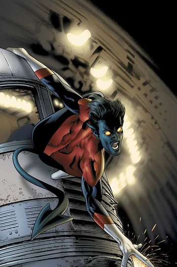
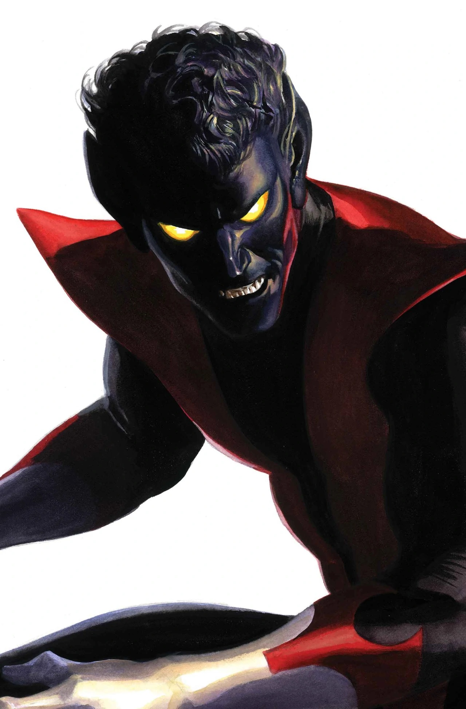
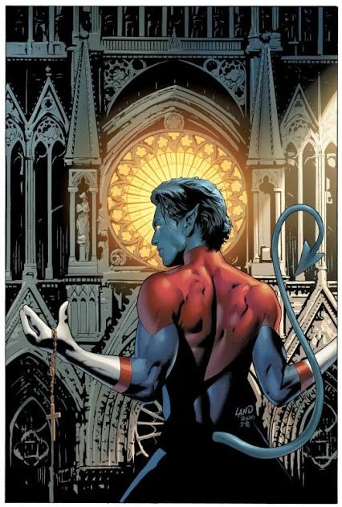
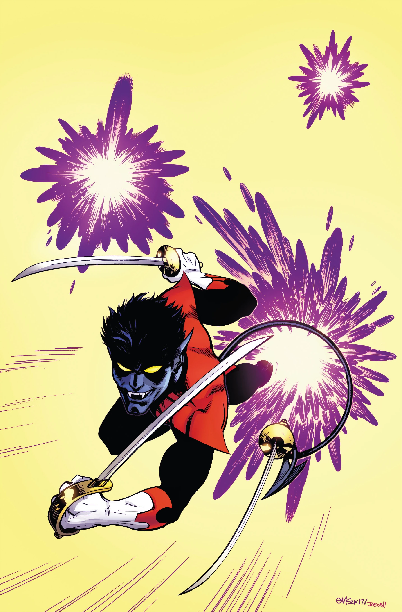
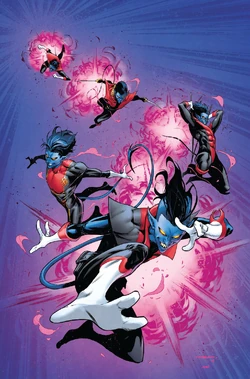
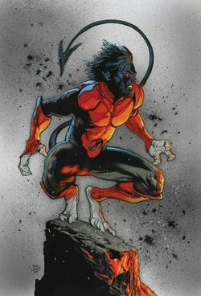
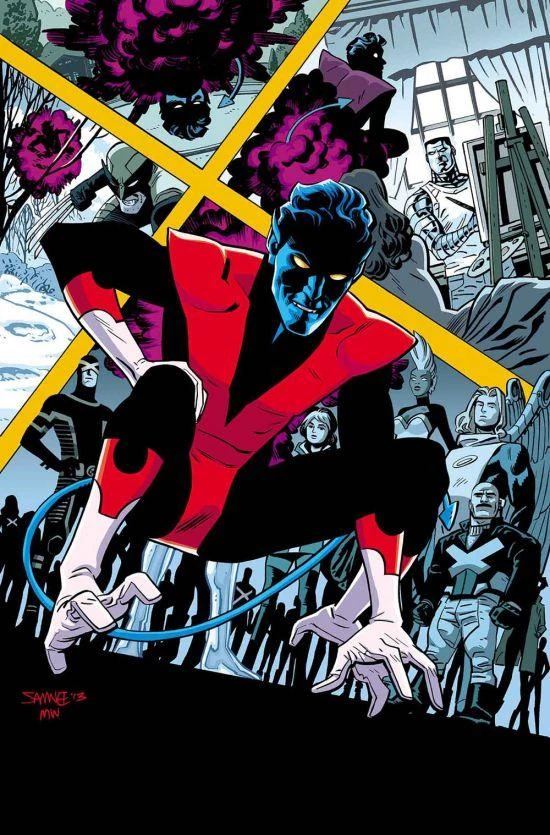
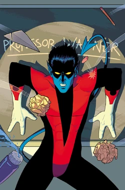
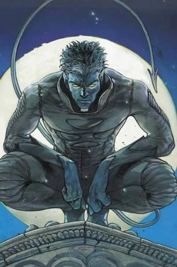
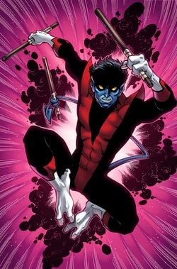
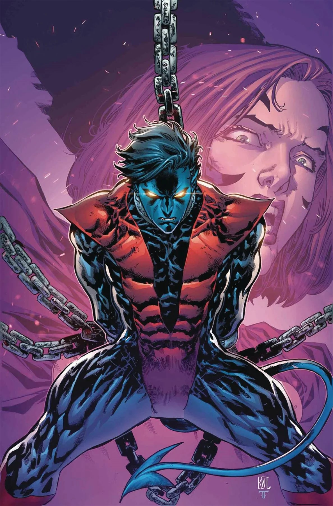
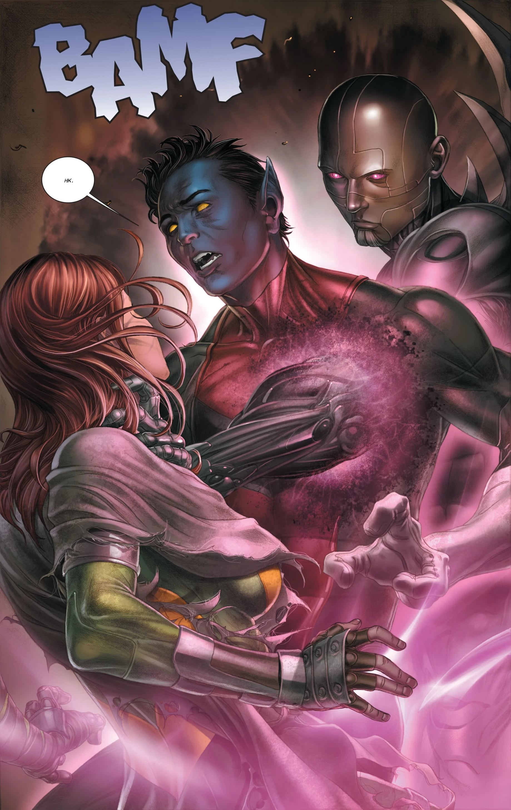
Personnalité :
Malgré son apparence démoniaque, Kurt est profondément gentil, empathique et doux.
Il possède un sens de l'humour marqué.
Il utilise la gaieté comme un moyen de mettre les autres à l'aise et d'adoucir les moments difficiles.
Kurt est profondément croyant (catholique), ce qui influence beaucoup sa vision du monde, ses choix moraux et son rapport à la violence.
Il est réellement loyal envers ses proches, comme les X-Men.
C'est un personnage très sensible, passionné, parfois mélancolique, et souvent en quête d'acceptation.
Capacités :
Diablo est un mutant qui possède la capacité de se téléporter avec ses vêtements, ainsi qu'avec toute chose ou personne en contact direct avec lui, dans la limite d'une certaine masse.
Il ne peut se téléporter que vers un endroit qu'il connaît déjà ou dans son champ de vision.
Ses téléportations exhalent une odeur de souffre, de la fumée et émettent un bruit caractéristique (« Bamf »).

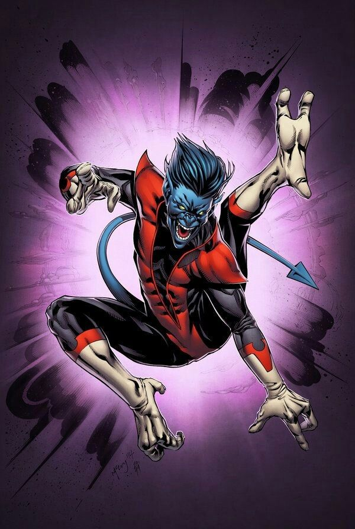
Apparence :
Kurt Wagner est un mutant doté de caractéristiques physiques inhabituelles : il est recouvert d'une fourrure bleu-noire sur tout le corps, ses mains possèdent trois doigts, dont un opposable, ses pieds comptent deux longs orteils, il a une queue pointue et préhensile d'environ un mètre de long avec laquelle il peut saisir des objets ou se balancer.
Il possède des oreilles et des canines pointues, ainsi que des yeux jaunes sans pupille.
Son apparence est similaire à celle d'un démon.
Son costume iconique est la tenue des X-Men, une combinaison noire avec des bandes rouges en forme de « V » sur le torse, avec parfois un col montant blanc ou rouge.
Ses pieds et mains restent généralement à découvert.
Les principaux ennemis de Diablo
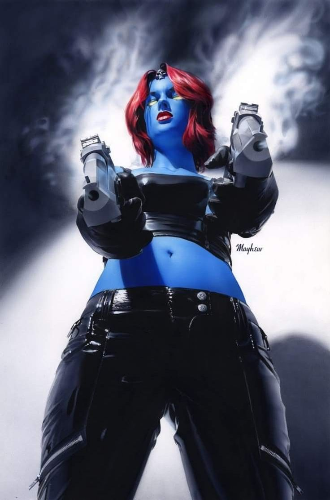
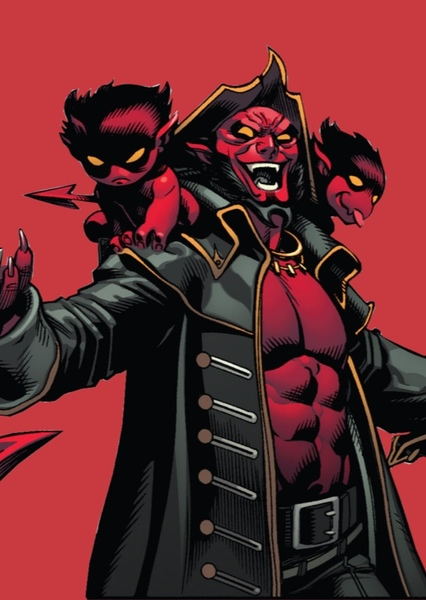
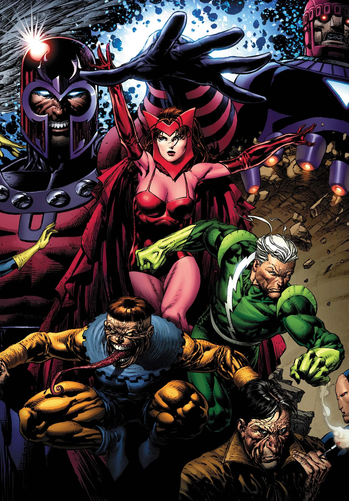

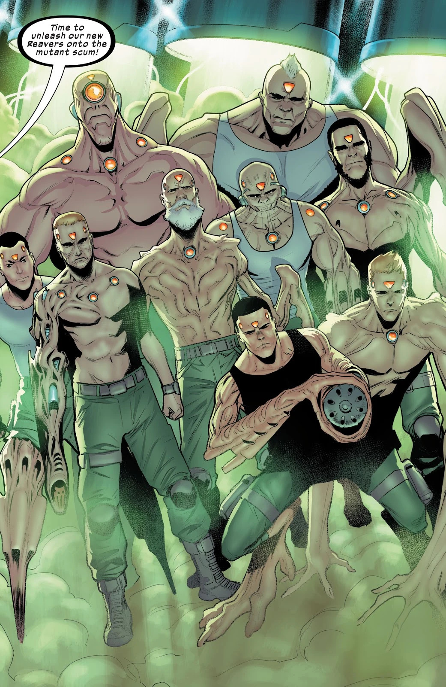


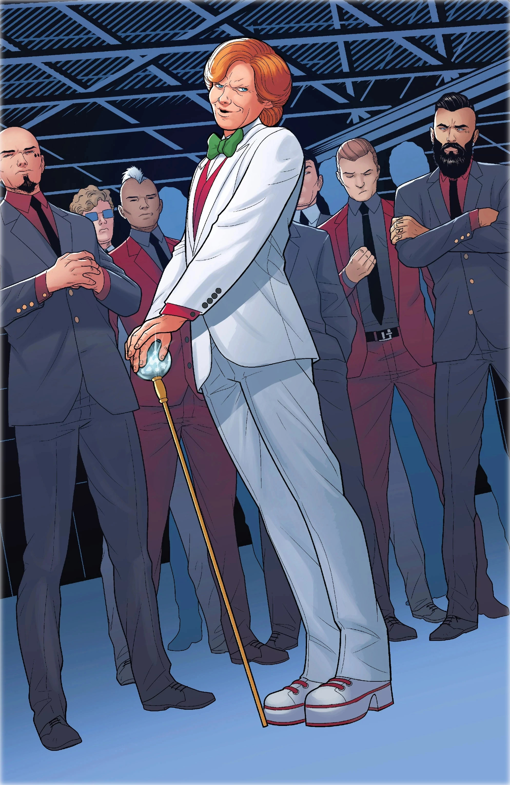
Équipes affiliées